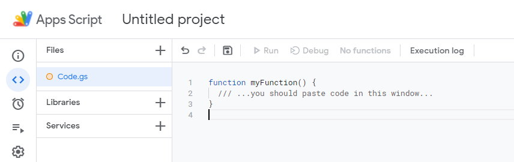
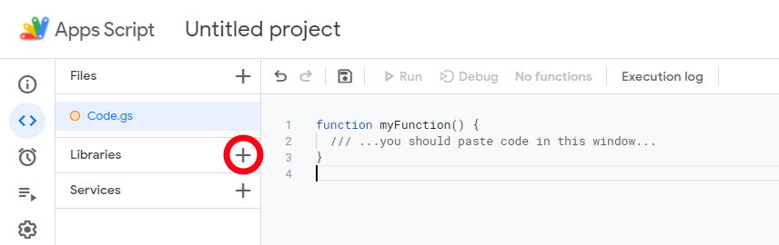
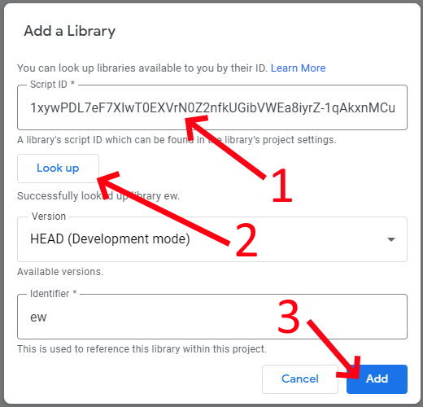
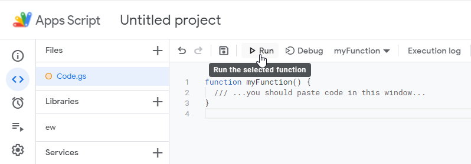
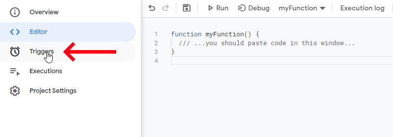
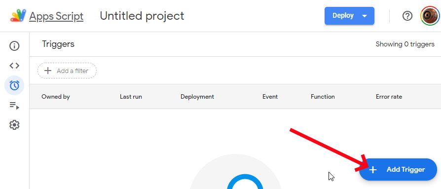
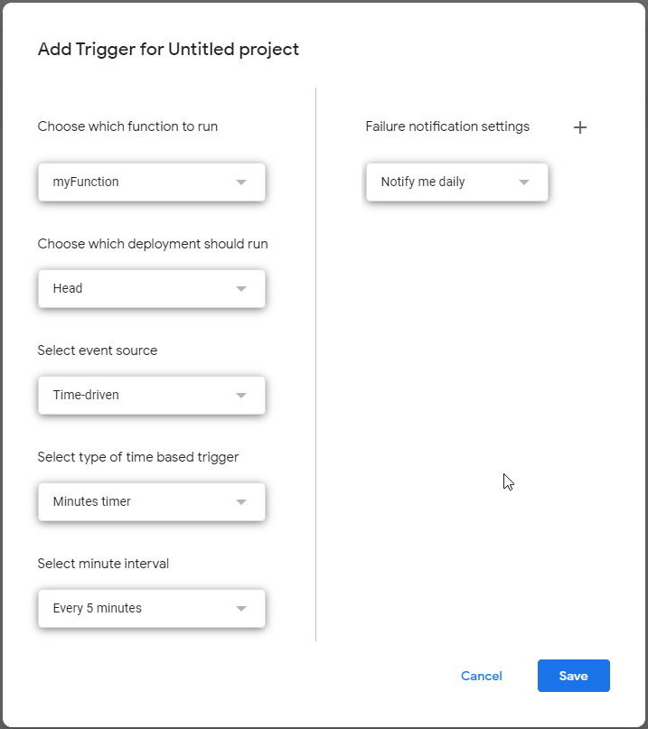

First, provide basic eWeLink access information - email, password, region using the Login button. We store
that strings locally and never store it anywhere except your computer.
Use blocks to create scenario to be executed periodically, for example once in 5 or 10 minutes. For
example, check temperature or state of the devices and then do some actions - switch devices, collect
information into the Google Sheets or anything else.
Paste the code to the Script editor text input
area.

Press the + right to the Libraries

Copy and paste the code, press Look up, and then
Add 1xywPDL7eF7XlwT0EXVrN0Z2nfkUGibVWEa8iyrZ-1qAkxnMCuERSJdkD Copy text

Now run the script with |> icon. Check if all works
as expected.

Go to triggers

Add trigger

Setup and add the time-driven trigger

Now your script will be executed every 5 minutes (set
another time period if need).
It is not mandatory to be programmer to use this App, but if you are familiar with programming, look the API.
Each function from the list may be used as ew.functionCall(...). If you are programmer, start to play with blocks,
then just write a code using the API.